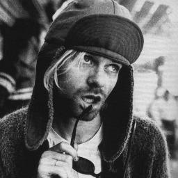

Kurt Cobain

Early life
Kurt Cobain was born at Grays Harbor Hospital in Aberdeen, Washington, on February 20, 1967, the son of waitress Wendy Elizabeth (née Fradenburg; born 1948) and automotive mechanic Donald Leland Cobain (born 1946). His parents were married on July 31, 1965, in Coeur d'Alene, Idaho. His ancestry included Dutch, English, French, German, Irish, and Scottish. His Irish ancestors emigrated from Carrickmore, County Tyrone in 1875. Researchers found that they were shoemakers, originally named "Cobane", who came from Inishatieve, a townland within Carrickmore. They first settled in Cornwall, Ontario, Canada, and then in Washington. Cobain himself believed his family came from County Cork. His younger sister, Kimberly, was born on April 24, 1970.
Cobain's family had a musical background. His maternal uncle, Chuck Fradenburg, played in a band called The Beachcombers; his aunt, Mari Earle, played guitar and performed in bands throughout Grays Harbor County; and his great-uncle, Delbert, had a career as an Irish tenor, making an appearance in the 1930 film King of Jazz. Kurt was described as being a happy and excitable child, who also exhibited sensitivity and care. His talent as an artist was evident from an early age, as he would draw his favorite characters from films and cartoons, such as the Creature from the Black Lagoon and Donald Duck, in his bedroom. This enthusiasm was encouraged by his grandmother, Iris Cobain, who was a professional artist.
Cobain began developing an interest in music at a young age. According to his aunt Mari, he began singing at the age of two. At age four, he started playing the piano and singing, writing a song about a trip to a local park. He listened to artists like the Ramones and Electric Light Orchestra (ELO), and, from a young age, would sing songs like Arlo Guthrie's "Motorcycle Song", The Beatles' "Hey Jude", Terry Jacks' "Seasons in the Sun", and the theme song to the television show of the band The Monkees.
When Cobain was nine years old, his parents divorced. He later said that the divorce had a profound effect on his life, while his mother noted that his personality changed dramatically; Cobain became defiant and withdrawn. In a 1993 interview, he elaborated:
"I remember feeling ashamed, for some reason. I was ashamed of my parents. I couldn't face some of my friends at school anymore, because I desperately wanted to have the classic, you know, typical family. Mother, father. I wanted that security, so I resented my parents for quite a few years because of that."
Cobain's parents both found new partners after the divorce. Although his father had promised not to remarry, after meeting Jenny Westeby, he did, to Kurt's dismay. Cobain, his father, Westeby, and her two children, Mindy and James, moved into a new household together. Cobain liked Westeby at first, as she gave him the maternal attention he desired. In January 1979, Westeby gave birth to a boy, Chad Cobain. This new family, which Cobain insisted was not his real one, was in stark contrast to the attention Cobain was used to receiving as an only boy, and he soon began to express resentment toward his stepmother. Cobain's mother began dating a man who was abusive. Cobain witnessed the domestic violence inflicted upon her, with one incident resulting in her being hospitalized with a broken arm. Wendy steadfastly refused to press charges, remaining completely committed to the relationship.(...)